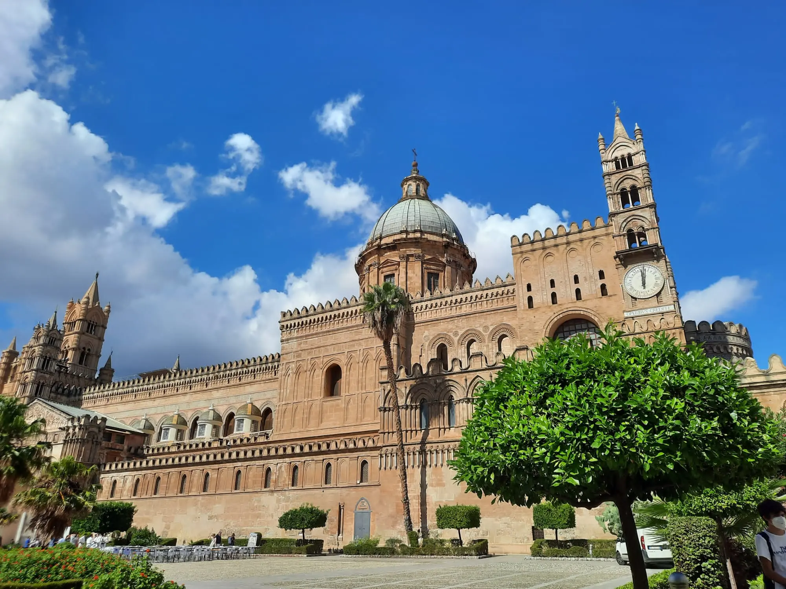
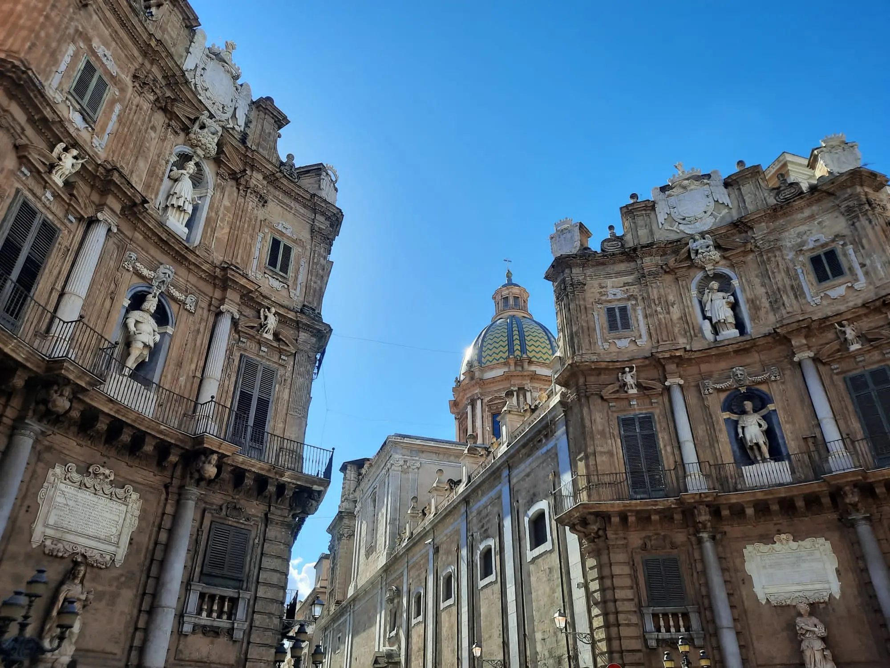
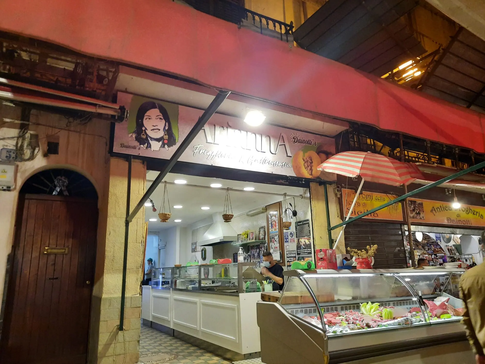
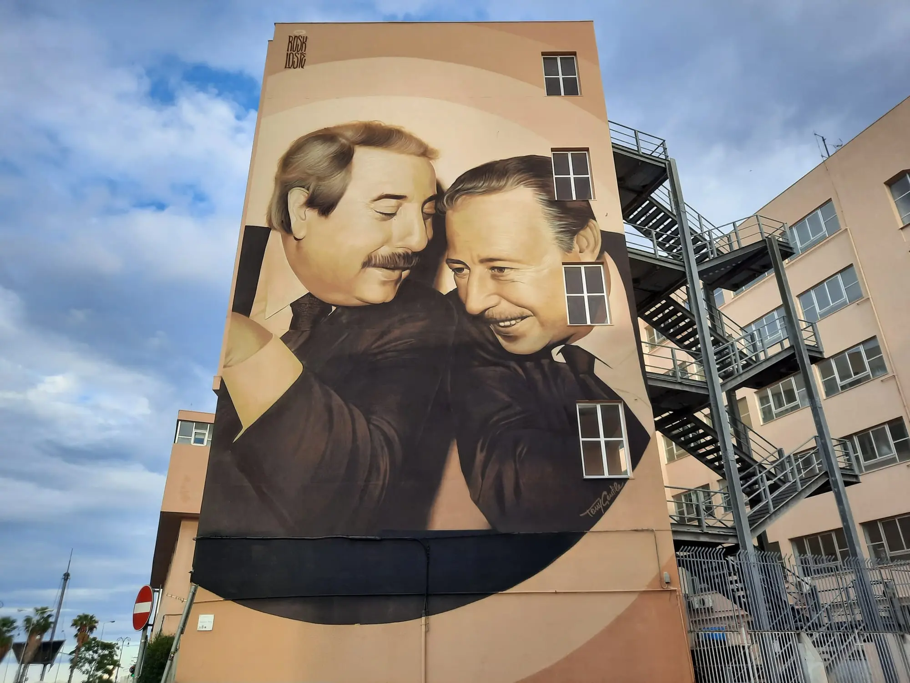
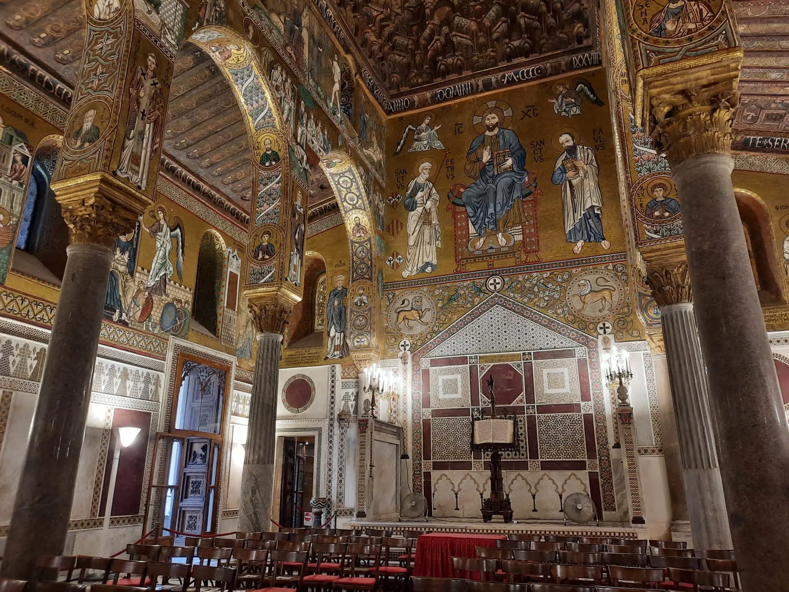
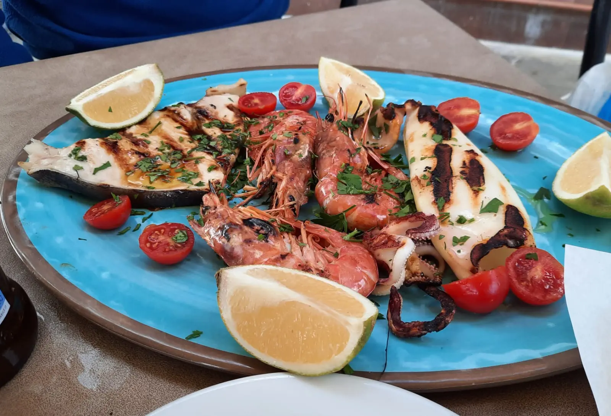
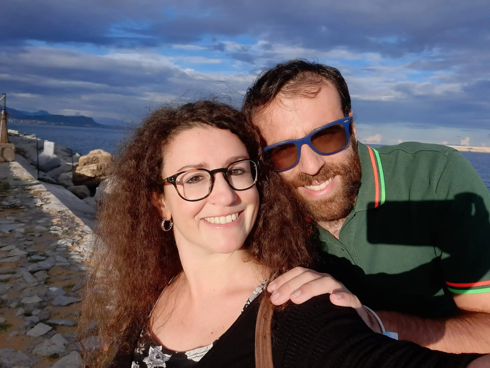
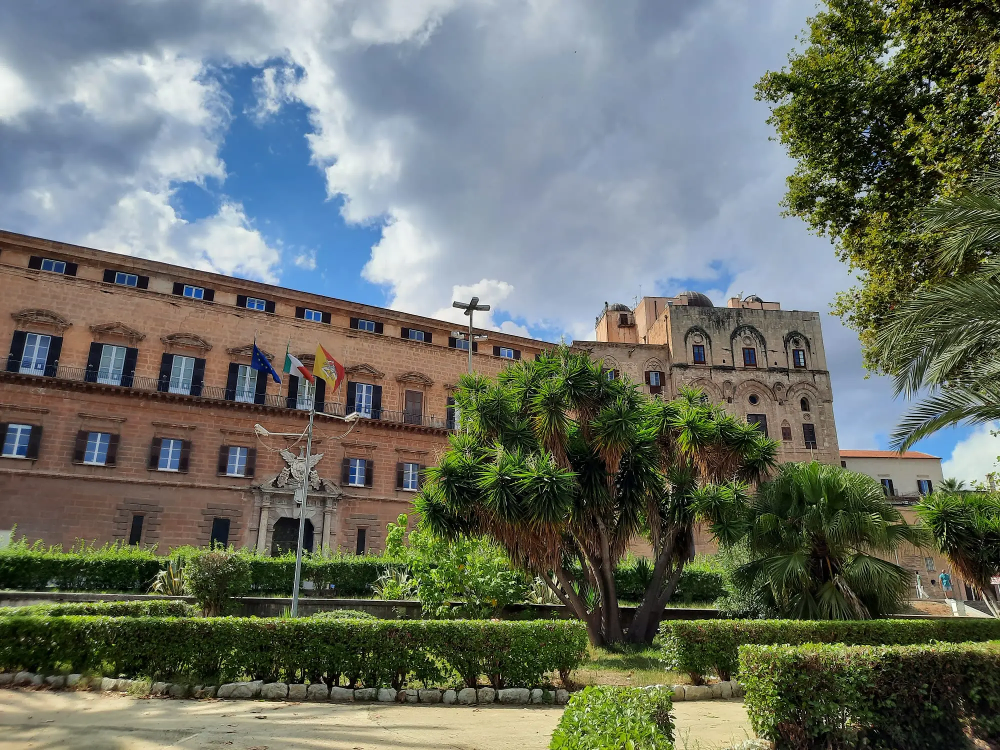

Weekend in Palermo & Mondello: Art, Food & Beach Guide
Palermo is a wonderful city, with one of the most beautiful historic centers in Italy. A weekend in Sicily’s capital may not be long, but if, like my partner Anna and I, you leave Friday afternoon and return Monday morning, you can enjoy a unique and unforgettable experience.
The Cathedral (Il Duomo) is a masterpiece of incredible craftsmanship, as is the famous Palatine Chapel inside the Norman Palace (Palazzo dei Normanni). Equally impressive are the Quattro Canti, the spectacular Pretoria Fountain, the Teatro Massimo, and many other landmarks. It’s a shame the Capuchin Catacombs were closed, otherwise, we would have ticked all the boxes.

Palermo Cathedral, founded in 1185
And then there’s Mondello. Just a few kilometers from Palermo, this seaside town is famous across Italy for its stunning beach. We even managed to swim there in the middle of October, which gives you an idea of the mild climate in these parts.
But Palermo isn’t just about art and the sea - it’s also a city for food lovers. While arancine, cassata, and cannoli are famous everywhere, I also found the “pani câ meusa” (spleen sandwich) exceptional, devoured on two separate occasions in two different styles.

Mondello Beach
What else can I say? Read on, and travel to Palermo and Mondello in your imagination!
Suggested Itinerary
| Day | Morning | Afternoon | Evening | Notes |
|---|---|---|---|---|
| 1 | Arrival, check-in | Explore Quattro Canti & Pretoria Fountain | Dinner at Dainotti's | Shuttle from airport |
| 2 | No Mafia Memorial | Palermo Cathedral and Norman Palace | Stroll & Cannoli | Rainy day option |
| 3 | Mondello Beach | Lunch at Roxy | Return to Palermo, gelato | Relax & Souvenir shopping |
| 4 | Breakfast at Pasticceria Costa | Departure | - | - |
Planning a trip to Palermo? Save this guide to make the most of your weekend getaway!
Arrival in Palermo & Sicilian Street Food
We arrived at Punta Raisi Airport “Falcone e Borsellino”, about 34 km from Palermo, around 6 pm. The moment we stepped off the plane, we were greeted by the scent of the sea - the perfect start to our vacation mood.

Quattro Canti, the historic baroque square in Palermo
The shuttle bus took us to the central station in just under an hour, and from there, it was about a fifteen-minute ride to our accommodation. Pretoria Rooms & Apartment is a charming B&B just a few steps from the Quattro Canti, right in the heart of the historic center. The owner was extremely kind, and after three days, we can confidently say we felt right at home. Highly recommended if you visit Palermo!
Exploring the Historic Center: Quattro Canti & Vucciria Market
After checking in and dropping off our luggage, we immediately went out, getting lost in the streets of the city center. The Quattro Canti and nearby Pretoria Fountain immediately caught our eye.

Dainotti's da Arianna, Palermo
From there, we wandered to the Vucciria Market. Inspired by the Italian TV show "4 Ristoranti", hosted by Chef Alessandro Borghese, we visited Dainotti's da Arianna, a beloved Palermo street-food spot. The staff treated us to some of the city’s best street food, accompanied by a cold beer.
Street Food Highlights
| Dish | Where to Try | Notes |
|---|---|---|
| Arancine | Dainotti's Apericapo | Classic Sicilian Snack |
| Pani câ Meusa | Dainotti's, Roxy | Must-try street food |
| Cannoli | Cannoli & Co. | Best cannoli experience |
| Fried seafood | Roxy | Fresh, local |
| Pane cunzato | Dainotti's | Bread with tomatoes, pecorino, anchovies, olive oil, and spices |
We also explored Piazza Verdi and admired the Teatro Massimo glowing in the evening blue light. On the way back, we strolled through the lively Via Maqueda and Via Vittorio Emanuele.
No Mafia Memorial, Palermo Cathedral & Norman Palace
“A place to honor the memory of the victims…” reads one page of the No Mafia Memorial website, the museum-laboratory we visited in the morning. Inside, we explored photos, texts, and videos recounting the history of both the mafia and anti-mafia movements. It’s a moving experience and a must-visit.
Later, we walked past the iconic mural dedicated to judges Giovanni Falcone and Paolo Borsellino in the Kalsa district, painted by street artists Rosk and Loste.

Falcone & Borsellino mural, via Mura della Lupa, Palermo
Before that, we visited two Palermo icons: the Cathedral and the Norman Palace, home to the stunning Palatine Chapel. The Cathedral’s exterior is truly impressive, both majestic and architecturally beautiful. Anna and I passed by several times, each time captivated.
Inside, we only explored the free areas due to time constraints. The Chapel of Saint Rosalia, dedicated to Palermo’s patron saint, is probably the busiest spot for visitors.

Palatine Chapel, Palermo
At the Norman Palace, the Palatine Chapel is the star, consecrated by King Roger II in 1140 and designated a UNESCO World Heritage Site in 2015. The mosaics here are breathtaking; French writer Guy de Maupassant called it “the most beautiful church in the world, the most astonishing religious jewel imagined by human thought.”
We also admired the Parliamentary Hall (home to the Sicilian Regional Assembly), the Duke of Montalto Rooms, the Punic Walls, the gardens, and a contemporary art exhibition - simply spectacular!
Evening Stroll & Dinner with Cannoli
After the cultural visits, we walked along the seafront near the Falcone and Borsellino mural, sitting and enjoying the gentle waves before reaching Villa Giulia and the Botanical Garden.
Returning to Via Maqueda, we had dinner with arancine and cannoli. Don’t miss “Cannoli & Co.” at Via Maqueda 268 - not just desserts, but true works of art.
A Day in Mondello: Beach, Lunch & Relaxation
We first heard about Mondello from "4 Ristoranti". One contestant, Noel from "Roxy RistoFriggitoria", inspired us to visit.
At Roxy, we had an amazing lunch: sardine meatballs, the famous spleen sandwich (praised by chef Borghese), and a delicious grilled seafood platter. Afterward, we explored the village and returned to the beach before heading back to Palermo.

Mixed Grilled Seafood at Roxy, Mondello
Before lunch, we spent a couple of hours enjoying the sea. I napped on the sand while Anna swam, fully enjoying the mild October water.
In the evening, back in Palermo, we had gelato at Palermo Store Café (Via Maqueda 397) and bought culinary souvenirs, finishing the day with limoncello.
Saying Goodbye: Breakfast & Departure
Our last stop was Pasticceria Costa for breakfast: Anna had a cream brioche, I chose chocolate - the perfect way to start the day.

Anna and Ricky in Palermo
We arrived at Punta Raisi Airport well ahead of schedule and were back at Malpensa by early afternoon, ready to dive back into everyday life after an unforgettable weekend.
Why You Should Visit Palermo
Would I recommend a trip to Palermo? Absolutely. Early autumn is ideal to avoid the intense summer heat and tourist crowds, especially in Mondello. Palermo is a treasure trove of art, food, and fun - all complemented by the chance to relax by the sea in Mondello.

Royal Palace, Palermo
Is a weekend enough? Not really, but if time is limited, I suggest the strategy we followed: leave Friday afternoon, return Monday late morning. Until next time - enjoy your Sicilian adventure!
Have you visited Palermo or Mondello? Share your favorite spots in the comments - we’d love to hear your tips!